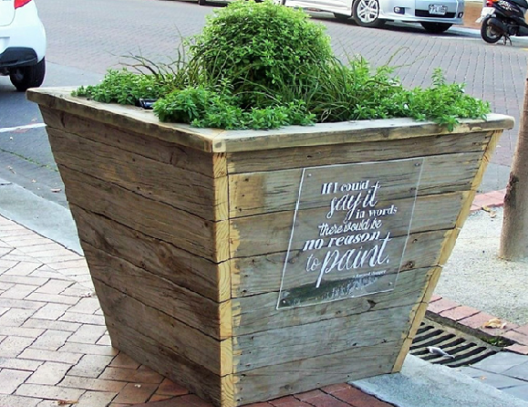

Reclaimed Timber Planters
A street project, the planters and story board were designed and built for Tauranga City Council.
Following the policy of upcycling the planters were constructed from reclaimed Mount Maunganui boardwalk while when filled with plants and decoration with quotes from famous artists gives the weathered timber a new lease of life. The storyboard echo's the shape of the planters and tells the history of the street.